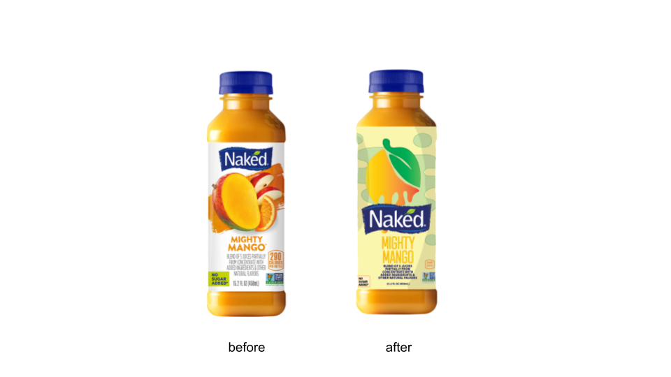
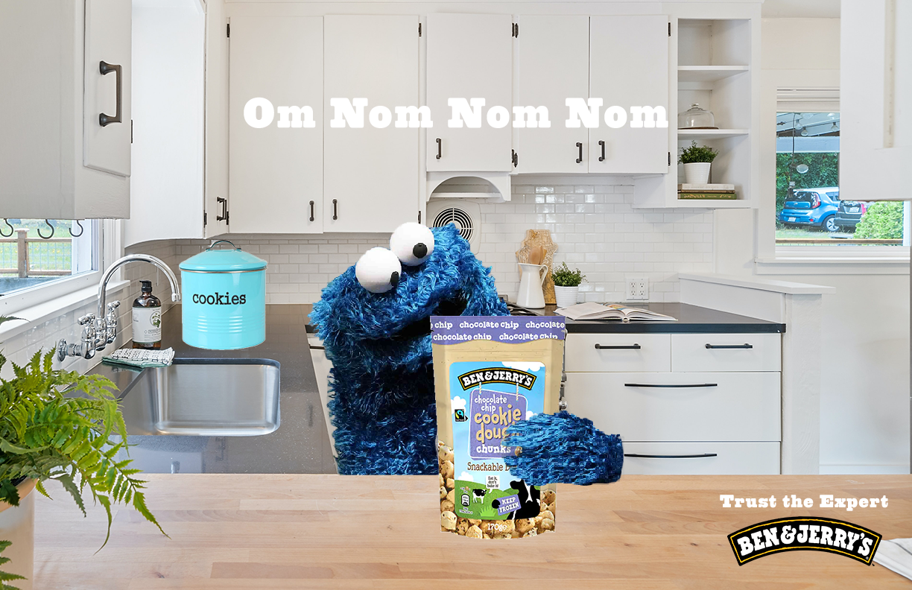

Projects
Graphic Design is one of the things I'm most passionate about. I love using Illutrator and Photoshop to make my ideas come to life.

Typographic poster dedicated to politician and voting rights activist Stacey Abrams

Rebranding assignment for Naked Juice

Fake print ad for Ben & Jerry's

Film photography done by me developed in a dark room